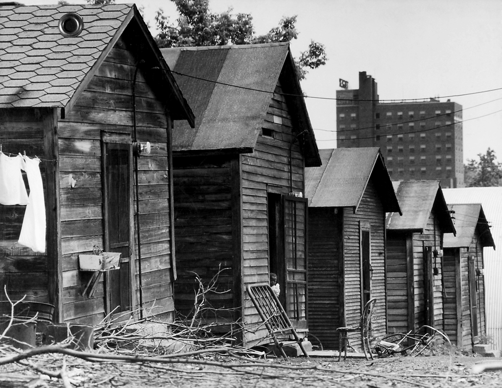
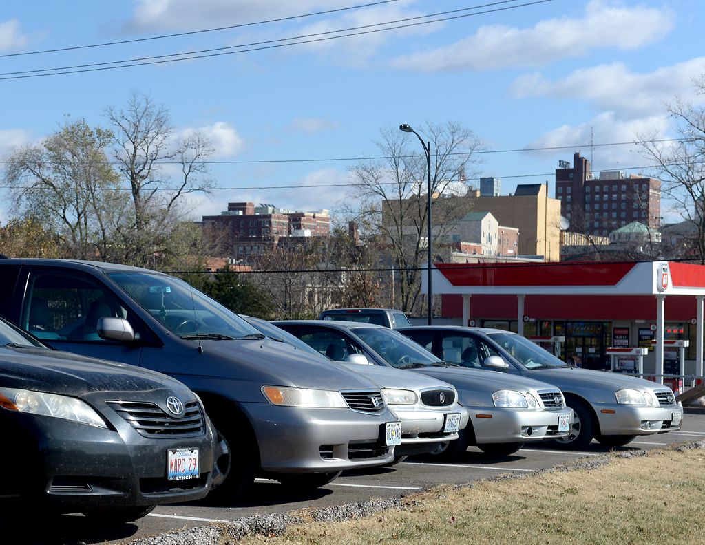

When this picture was taken in 1949, Columbia housed many people in tenements. Much of the housing was still segregated and African Americans were largely forced to reside in the poorer parts of town.

The grocery store Lucky's Market now takes up the place the tenements used to be.